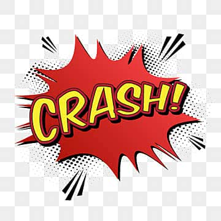

1958 - Tennis for Two
- Criador: William Higinbotham
- Local: Laboratório Brookhaven, EUA
- Feito: Primeiro jogo eletrônico recreativo
- Legado: Inspirou a ideia de jogar em computadores
1962 - Spacewar!
- Criadores: Stephen Russell, Martin Graetz, Wayne Wiitanen
- Local: MIT
- Feito: Primeiro jogo digital popular em computadores
1972 - Magnavox Odyssey
- Criador: Ralph Baer
- Empresa: Magnavox
- Feito: Primeiro console doméstico comercial
- Problema: Jogos simples e sem som

1975 - Atari Home Pong
- Empresa: Atari
- Feito: Versão doméstica do sucesso de arcade "Pong"
- Impacto: Popularizou os videogames nas residências

1977 - Atari 2600
- Criador: Nolan Bushnell e Atari
- Feito: Popularizou os cartuchos
- Destaques: Space Invaders, Pac-Man
- Problema: Mercado saturado com jogos ruins

1979 - Mattel Intellivision
- Empresa: Mattel
- Feito: Concorrente direto do Atari com melhor hardware e controle numérico
- Destaques: Baseball, Astrosmash
- Impacto: Primeira plataforma com propostas mais "familiares" para jogos domésticos
1982 - ColecoVision
- Empresa: Coleco
- Feito: Gráficos mais próximos ao arcade da época
- Destaques: Donkey Kong (port), coleções de arcades
- Impacto: Elevou o padrão técnico antes do crash de 1983

1983 - Crash dos Videogames
- Motivo: Excesso de jogos de baixa qualidade
- Impacto: Quebra de empresas e desconfiança do público
- Superação: NES reviveu a indústria em 1985

1985 - Nintendo Entertainment System (NES)
- Empresa: Nintendo
- Feito: Lançou Super Mario Bros.
- Impacto: Dominou 90% do mercado americano
- Legado: Introduziu o “Seal of Quality”

1985 - Sega Master System
- Empresa: Sega
- Feito: Concorrente direto do NES com hardware superior em alguns aspectos
- Destaques: Alex Kidd, Sonic em versões iniciais
- Impacto: Fortaleceu a presença da Sega no mercado mundial
1987 - TurboGrafx-16 (PC Engine)
- Empresa: NEC / Hudson
- Feito: Popular no Japão como PC Engine, entrou no mercado ocidental como TurboGrafx-16
- Destaques: Bonk, R-Type
- Impacto: Consoles de 8/16 bits com boa biblioteca no Japão

1988 - Sega Mega Drive
- Empresa: Sega
- Feito: Popularizou os 16 bits
- Destaques: Sonic the Hedgehog, Streets of Rage
- Impacto: Rivalidade histórica com a Nintendo
1989 - Nintendo Game Boy
- Criador: Gunpei Yokoi
- Feito: Popularizou os portáteis
- Destaques: Tetris, Pokémon

1990 - Super Nintendo (SNES)
- Feito: Avanços em gráficos e som
- Destaques: Mario, Zelda, Donkey Kong
- Impacto: Rivalidade com o Mega Drive
.png)
1990 - Neo Geo (AES)
- Empresa: SNK
- Feito: Hardware de arcade para casa com alta fidelidade
- Destaques: Metal Slug, King of Fighters
- Impacto: Plataforma cara, voltada a entusiastas e arcades

1993 - Atari Jaguar
- Empresa: Atari
- Feito: Anunciado como console "64-bit"
- Problema: Biblioteca pequena e suporte limitado

1994 - Sega Saturn
- Empresa: Sega
- Feito: Console com CDs e foco em jogos 2D/3D
- Problema: Lançamento apressado e jogos complexos de programar

1994 - Sony PlayStation
- Criador: Ken Kutaragi
- Empresa: Sony
- Feito: Popularizou CDs e jogos 3D
- Impacto: Mudou público para jovens/adultos

1996 - Nintendo 64
- Feito: Consolida o 3D nos games
- Destaques: Super Mario 64, GoldenEye 007
- Problema: Cartuchos caros vs CDs do PlayStation
1998 - Sega Dreamcast
- Empresa: Sega
- Feito: Primeiro console com internet
- Problema: Concorrência do PlayStation 2

2000 - Sony PlayStation 2
- Empresa: Sony
- Feito: Console mais vendido da história (155M+)
- Destaques: GTA, Final Fantasy, Gran Turismo
- Impacto: DVD player popularizou a mídia
2001 - Nintendo GameCube
- Empresa: Nintendo
- Destaques: Smash Bros. Melee, Metroid Prime
- Problema: Concorrência forte do PS2 e Xbox

2001 - Microsoft Xbox
- Empresa: Microsoft
- Feito: Introduziu Xbox Live
- Destaque: Halo como ícone

2004 - Nintendo DS
- Feito: Consoles portáteis com duas telas (uma touch)
- Destaques: Pokémon, Brain Age, Nintendogs
- Impacto: Portátil mais vendido da história (154M+)

2004 - Sony PSP
- Empresa: Sony
- Feito: Primeiro portátil com gráficos próximos de console
- Destaques: God of War, GTA: Liberty City Stories

2005 - Xbox 360
- Empresa: Microsoft
- Feito: Consolidação do Xbox Live
- Destaques: Halo 3, Gears of War
- Problema: "Red Ring of Death" em alguns lotes

2006 - Nintendo Wii
- Feito: Controles por movimento
- Impacto: Sucesso entre público casual
- Problema: Hardware fraco
2006 - Sony PlayStation 3
- Empresa: Sony
- Feito: Blu-ray integrado e foco em mídia
- Destaques: Uncharted, The Last of Us (posteriores)
- Problema: Preço alto no lançamento
2011 - PlayStation Vita
- Empresa: Sony
- Feito: Portátil com telas OLED (modelos iniciais)
- Destaques: God of War: Collection (ports), jogos indie
- Problema: Baixa adoção, competição com smartphones

2012 - Nintendo Wii U
- Empresa: Nintendo
- Feito: Console com GamePad (tela integrada)
- Problema: Marketing confuso e baixa adoção
2013 - PlayStation 4 & Xbox One
- Feito: Consoles digitais e online
- Impacto: PS4 dominou vendas
- Problema: DRM do Xbox criticado
2017 - Nintendo Switch
- Feito: Primeiro console híbrido
- Destaques: Zelda BOTW, Mario Kart 8 Deluxe
- Impacto: Sucesso mundial
2020 - PlayStation 5 & Xbox Series X|S
- Feito: Nova geração, SSD ultrarrápido
- Problema: Escassez de chips
- Legado: Consolidação do digital e serviços
2025 - Nintendo Switch 2
- Empresa: Nintendo
- Feito: Evolução do conceito híbrido com hardware mais potente
- Destaques: Zelda Echoes of Time, novo Mario 3D
- Impacto: Consolidação da Nintendo na nova geração
- Correções: Melhor desempenho em dock e portátil, controles mais duráveis
- Problemas do antecessor: Joy-Con drift, pouca potência frente a rivais e falta de apps multimídia